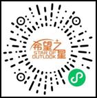

2023冬令营课程时间是1月30日至2月3日(一周)，目前冬令营开放报名，有兴趣同学可至语言中心1302咨询报名。
【冬日暖心周活动－学生会】
为迎来冬天的到来，2022-2023学年第一学期中学部冬日暖心周活动将于2022/12/5（周一）至2022/12/8（周四）每日17:15-18:15举办，昆山康桥学校第八届学生会在此诚挚的邀请各位同学参与活动
活动内容
2022/12/5(一) 17:30-17:55于图书馆举办冬日暖心点灯仪式
2022/12/6(二) 17:15-18:15心辅之声＆学生会合作活动—解忧电台于一餐连廊举办
2022/12/7(三) 17:15-18:15大使团＆学生会合作活动—冬日暖心摊位活动于一餐连廊举办
2022/12/8(四) 17:15-18:15于图书馆进行快闪表演以及奖品兑换
活动规则
1）活动时间均在晚餐时间，除已请公假工作人员外，提前到场同学依早退处理给予警告信
2）如违反规则，现场的工作人员会给予提醒，两次提醒后，若继续违反现场活动的秩序和规则的话，德育处根据情节严重与否，给予Detention或警告信
3）签到所用的纸张在周一活动现场领取，请妥善保管，若有遗失概不负责，参与活动的同学需完成全部活动签到才可获取奖品，限前200位同学，
不参加奖品兑换同学亦可参加活动
·快闪活动报名开始时间为2022/12/5（周一）至2022/12/7（周三）截止，活动内容可是唱歌跳舞，同学们可以随意组队，活动限定三个节目，届时会从报名的节目视频中筛选
以下是快闪活动的报名链接：
报名链接
2022-2023学年第二学期周一、周二社团选课将于2022/12/03上午8:00开始，截止日期为2022/12/14晚间21:00。选课SOP详见附档，请同学们注意在提交成功选课单后，需检查选课单志愿顺序是否和自己所选的内容一致，若选课志愿顺序不一致，请点击课程右侧上下箭头进行顺序调整。运动类社团因场地人数限制，最终选课结果会依据系统订单先后顺序排列，人数满员后将顺延第二志愿。请同学们知悉，谢谢！
高中通过的自创社团：解问论研究社 商业传媒研究社 化学研习社
初中通过的自创社团：围棋
“诞旦祝福，欢乐来袭” Notice on Reading activities on Christmas and New Year's Day
一年一度的圣诞、元旦马上就要到了，新年的钟声可曾唤起你对往昔的回忆? 值此佳期，图书馆特举办“诞旦祝福，欢乐来袭”活动，欢迎大家积极参与：
2023脑科学大赛BRAIN BEE CHAMPIONSHIP开始报名！
报名时间：2022/11/4-2023/1/10
参与对象：G9-G12年级学生可参加Brain Bee
G7-G8年级学生可参加低龄组Brain Bee（Junior）
参赛时间：地区活动：2023年2月18日上午10:00-11:30
活动网址：
报名时间：2022/11/4-2023/1/10
报名方式：前往1332办公室报名
相关竞赛问题可至教一三楼1332办公室咨询!
第24届（2023年度）“希望之星”比赛正在报名中！
海选截止时间：2023年1月15日

报名方式：扫码填写线上报名表→完成海选测评(Soopt测评)→等待初评
咨询方式：教一三楼1302语言中心
竞赛形式：个人参与，选择题 ，线上答题
竞赛时间：2023年1月18日 10:00-10:40（40 分钟）
竞赛地点：在家参加线上考试
报名截止时间：2023年1月8日
竞赛语言：中英文双语
报名方式：扫描二维码进群报名（二维码详见校园公报）
BPA商业全能挑战正在报名中！
比赛时间：2023年1月
报名截止时间：2023年1月8日
参与方式：个人or团队（3人）
组别：初中组：G7-G9/高中组：G10-G12
报名网站：
报名咨询：教一三楼1332学术专案组张老师